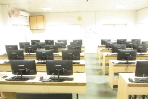
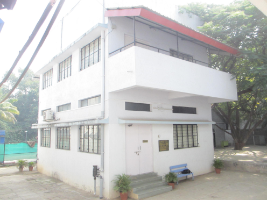
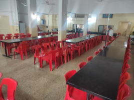
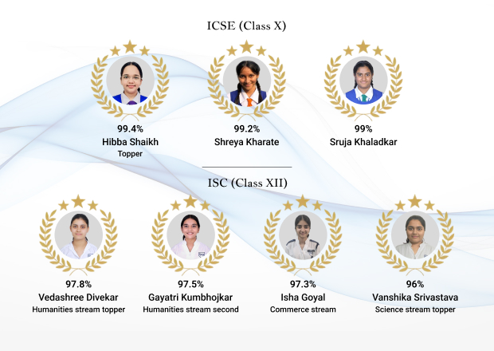

The school programme
The school has developed its own programme to ensure a holistic balance between academics, creativity and physical activity. Teaching usually extends beyond the classroom, with active involvement and participation of every child in various activities and events.
Group I — compulsory
English; Second Language (Hindi); History, Civics & Geography.
Group II — any two
Mathematics; Science (Physics, Chemistry & Biology); Economics; Environmental Science.
Group III — any one
Computer Applications; Commercial Applications; Home Science (for girls only).
Subject choices in Standards IX and X follow the rules and regulations of the CISCE Board.

Facilities
What the school keeps
Audio visual
Media education is imparted through audio visual classes where value education, social awareness and relevant topics are taught through slides and stories. For the higher classes, LCD projectors and laptops simplify complex concepts.
Learning Resource Centre
Students are encouraged to read and library hours are part of the curriculum. The library is well stocked with age-appropriate classics, fiction and reference books. All three sections have libraries, aiding research programmes.
iPads and computer labs
Children from Prep to Std 3 work with iPads using Apple Educational Tools, which enhance learning skills. For the higher classes, projects and research are ably aided by the three computer labs.
Refectory
Meals and wholesome, tasty snacks, hygienically cooked, are available at the school cafeteria.




The honours board
This year’s returns
St. Mary’s School, Pune achieves a 100% pass rate in the ICSE and ISC board examinations. Continuing its tradition of academic excellence, the school celebrates the accomplishments of its top-performing students.
In the ICSE (Class X) examination, Hibba Shaikh secured the top position with an exceptional 99.4%. Out of 203 girls and boys, 66 students secured above 95% in English and the best of four subjects, and 135 secured above 90%.
This year 97 students appeared for the ISC Class XII examination; 12 secured above 95% and 39 above 90%.
- Vedashree Divekar topped the Humanities stream with 97.8%; Gayatri Anand Kumbhojkar came second with 97.5%.
- Isha Goyal led the Commerce stream with 97.3%.
- Vanshika Srivastava emerged as the Science stream topper with 96%.
These results are a testament to the dedication, perseverance and hard work of the students, supported by the commitment of the faculty and the encouragement of parents.
The archive
Toppers, 2011 to 2023
Results at the ICSE and ISC examinations have always been excellent due to the combined efforts of a strong team of competent and dedicated teachers, innovative methods of teaching and continuous evaluation. The school has produced students who have excelled at the national level and gained admission into prestigious universities at home and overseas.
ICSE — Girls’ Section
- 2023 — 1st position — 99.2% — Ananya Bapat, Anusmita Sen
- 2022 — All India Topper — 99.8% — Hargun Kaur Matharu; All India Second Rank — 99.6% — Shivani Deo
- 2017 — 1st position — 98.8% — Mrunmayee Nerlikar, Aishwarya Mahindrakar
- 2013 — Anika Agrawal and Simran Khanuja stood first at the national level
ICSE — Boys’ Section
- 2017 — 1st position — 99% — third national topper — Raghav Singhal
- 2013 — Ashley Castellino stood third at the national level
- 2012 — Kalpesh Krishna stood second at the national level
ISC
- Science — 2023, 98.3%, Mihika Gupte; 2019, 99.5%, Vishruti Ranjan, third national topper
- Commerce — 2023, 98.0%, Khyaati Saraogi; 2017, 97.8%, Aanvi Patodia
- Humanities — 2023, 99.3%, Tanisha Joshi